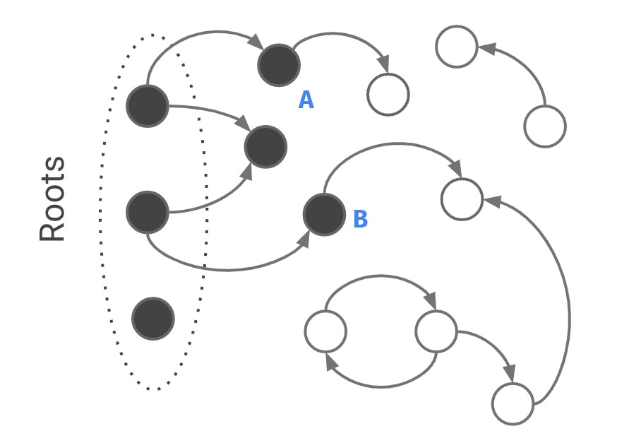
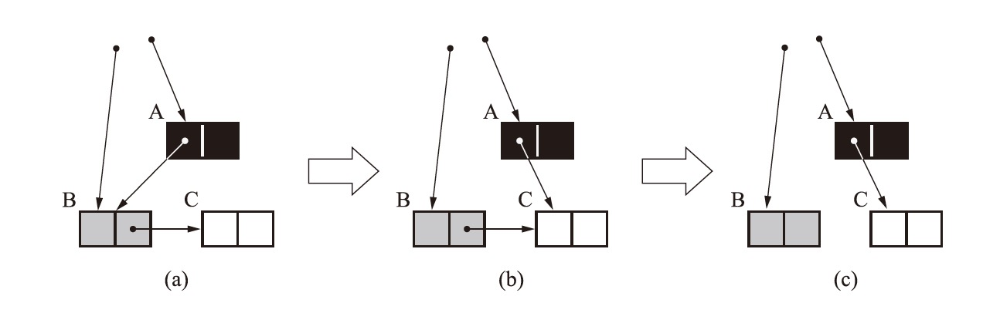
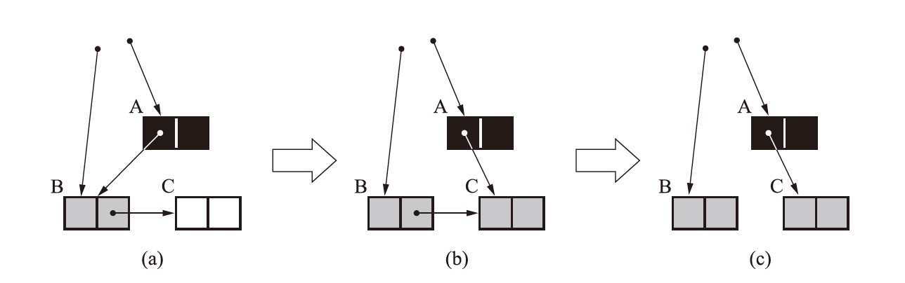

V8 增量 GC 之三色标记
因为要做组内分享，最近看了一下《垃圾回收算法与实现》，发现其实垃圾回收的算法基调基本上世纪 60 年代就已经提出来了，后世的框架只是在给这些框架做组合和修补的工作。抛掉老生常谈的分代假设不谈，V8 官博今年新发了一篇博文介绍 V8 GC 新进展，讲到增量回收的话题。本以为增量 GC 是什么新鲜东西，实际上早在 1975 年的一篇论文中，大宗师 Dijkstra 就已经提出了这个问题的解决方案——三色标记算法。
令我疑惑的是，分代假设、清道夫算法跟传统的 Mark-Sweep 算法，都是符合逻辑容易理解的；但到了三色标记这儿，好多资料都是语焉不详的：大家都尽力在描述这个算法的实现（其实也并不复杂），有的也给出了动图（后来发现是抄的维基百科），但并没有博文真正解答这个问题：为什么不能直接用双色标记，而要用三色标记？
为了避免这个知识成为需要靠死记硬背才能记住的知识孤岛，我翻了一下大法师的论文原文，总算有了些头绪。
什么是垃圾回收
我们首先先迅速而简单地介绍一下，到底什么是垃圾回收？其实顾名思义，主要是两点：垃圾、回收。
然后基于这两点有个 What/How/When，基本就把事儿讲明白了，翻译成官方术语就是：
- 什么是垃圾？如何找到垃圾？何时找垃圾？
- 什么是回收？怎么回收？何时回收？
对于所有的垃圾回收而言，垃圾其实都是指已经没用的内存区域，回收就是指让这些区域可以被新的有用数据覆盖；对于怎么回收而言，也基本就是 Sweep 和 Compact 这两种策略，回收的时机也都是找完了就操作；但是在找垃圾（后面就称之为标记）的 How/When 这里，传统和增量就产生了区别：
对于传统的算法而言，垃圾回收是『全暂停式』（Stop-The-World，后面简称 STW）的，当程序（专业术语称 mutator，指能改变这个内存区域是否被程序引用的东西，比如程序本身。顺带一提，这个词儿也是 Dijkstra 琢磨出来的）执行，GC 等着；特定时机时（比如内存满了）GC 执行，mutator 等着。因此它的如何找和何时找都比较简单：内存满，STW 开始；而找垃圾就是一种图的遍历，从 Root 出发，对所有能访问的节点进行标记，访问不到的就是垃圾。

采取 STW 这样凶残的策略，主要还是防止 mutator 在 GC 的时候捣乱——这跟你用扫地机器人的时候把狗关屋子的道理是一样的；而增量标记，就等于赶着狗扫地，是一个跟 mutator 斗智斗勇的过程。
增量回收的困境
对于增量回收而言，主要存在两个问题：第一个是需要暂停重启，第二个就是调皮的 mutator。
暂停重启

因为增量回收是并发的（concurrent），因此它的过程像上图一样（可以想象一下 CPU 的时间片轮转），这就意味着 GC 可能被随时暂停、重启，因此暂停时需要保存当时的扫描结果，等下一波 GC 来之后还能继续启动。而双色标记实际上仅仅是对扫描结果的描述：非黑即白，但忽略了对扫描进行状态的描述：这个点的子节点扫完了没有？假如我上次停在这样一个图上，重新启动的时候我就不仅要问：到底 A、B 点要不要扫子节点？

为了处理这种情况，Dijkstra 引入了另外一种颜色：灰色，它表示这个节点被 Root 引用到，但子节点我还没处理；而黑色的意思就变为：这个节点被 Root 引用到，而且子节点都已经标记完成。这样在恢复扫码时，只需要处理灰色节点即可。

引入灰色标记还有一个好处，就是当图中没有灰色节点时，便是整个图标记完成之时，就可以进行清理工作了。
调皮的 mutator
解决了三色的问题，就可以增量回收了么？其实没有这么简单。我们可以想象一下，什么是失败的垃圾回收？无非就是两点：
- 把有用的东西扔了；
- 把没用的东西留着；
其实只要有手段，没用的垃圾还是可以忍它留几轮；但是有用的被干掉是无法忍受的：我刚声明了一个变量你就告诉我 Reference Error，我 fuuuuu 佛慈悲。
对于传统的 STW 而言，通过根节点标记引用，能力立刻区分当前状态下的有用和没用，再做操作的时候便游刃有余；但是对于增量回收而言就不同了，Dijkstra 在论文里举了一个很顽皮的 mutator：
- 三个节点 ABC，C 在 AB 之间反复横跳，一会儿只有 A 指向 C，一会儿只有 B 指向 C；
- 开始扫 A 时，C 的爸爸是 B，扫完了 A 节点是黑的， C 是白的；
- 开始扫 B 时，C 的爸爸是 A，扫完了 B 没有子节点，B 节点是黑的，C 还是白的；
- 由于 A 节点已经标黑，无法扫描其子节点，只好继续向后扫描；
- 一顿蛇皮操作之后，C 被当成孤儿干掉了，C 的爸爸们留下了无奈的泪水。

写屏障
刚才的案例其实就是说了一个问题：在 mutator 瞎操作的情况下，很有可能将已经标记为扫描完事儿的节点（黑色节点）续上一个当时还未被扫描的白色节点。而一旦这个白色节点后续又被其他已经扫描过的节点引用到，也没有什么机制能够再收集它了。
在思考完这个案例之后，Dijkstra 提出了一个要求：不能让黑色节点指向白色节点！每当发生引用变化时，需要立刻对被引用节点进行着色：即白的立刻染灰，灰的和黑的不变。
比如上面 C 的例子，当 C 的父节点发送变化时，一定会出现类似这样的代码：A.C = C，发生之后，立刻给 C 节点着色并推入灰色栈，这样就解决了不小心清理掉有用节点的问题。

总结
总而言之，三色标记主要是为了解决增量标记中传统双色标记过程无法分片的问题，有了三色标记，传统的双色标记便可以暂停重启，因此就可以划分成小段，变成跟 mutator 并发的方式来运行；写屏障则是用来解决并发中 mutator 变化，导致有用内存被清理的问题。三色标记只是垃圾回收众多技术方案之中的一个小插曲，其他如分代假设、清道夫算法等都有其精妙之处，可以深入研究。
参考文章
- 朴神雄文 V8 GC Log
- 垃圾回收的算法与实现
- Lua JIT 文档：有趣的是，由于 Lua 在 5.0 之前一直使用 STW 的双色标记，因此只有它在文档里简单描述了一下三色标记与双色标记的区别，甚至还提出了四色标记算法；